第六章 数据的收集与整理（高效培优单元测试·提升卷）
（考试时间：120分钟 试卷满分：120分）
一、选择题（本大题共10小题，每小题3分，共30分）
1．下列属于定性数据的是（ ）
A．某市中学生的视力情况 B．某种新研发的战斗机零部件是否合格
C．一批电灯泡的使用寿命 D．《朗读者》的收视率
2．下列采用的调查方式中，合适的为（ ）
A．了解全市学生观看“开学第一课”的情况，采用抽样调查
B．高铁站对乘坐高铁的旅客进行安检，采用抽样调查
C．出版社审核书稿中的错别字，采用抽样调查
D．调查某池塘中现有鱼的数量，采用全面调查
3．为反映近十年我国GDP随年份的变化情况，并预测下一年的GDP数值，宜采用的统计图是（ ）
A．趋势图 B．折线图 C．条形图 D．直方图
4．为了解某校学生的睡眠时间，下列抽样调查中样本具有代表性的是（ ）
A．选择九年级一个班的学生进行调查；
B．选择全校的男生进行调查；
C．对全校成绩排名前 的学生进行调查；
的学生进行调查；
D．每个班级随机抽取
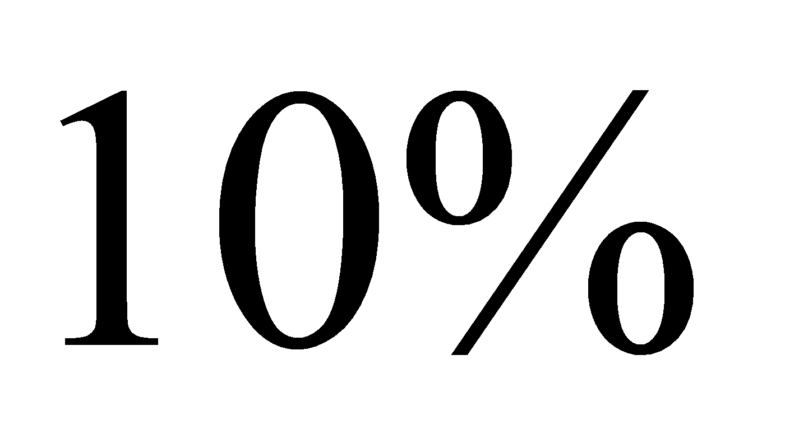
的学生进行调查．5．某校有学生近两千余人，需要建造新的自行车停车棚，于是采用抽样调查的方式了解同学们骑自行车的情况，拟定以下步骤：

①从每班随机抽取10人进行调查；②设计骑自行车情况的调查问卷；
③用样本估计总体；④整理收集的数据．其中排序正确的是（ ）
A．①②③④ B．②①③④ C．②①④③ D．①④②③
6．某地区为推进垃圾分类教育，对初中生进行垃圾分类知识普及效果调查．在该地区6000名初中生中随机抽取200名初中生，发现其中有60名学生能正确回答“废旧电池属于有害垃圾”．据此样本，估计该地区掌握这一垃圾分类知识的初中学生大约有（ ）
A．1200名 B．1500名 C．1800名 D．2000名
7．为了了解某地区5200名初中毕业生参加中考的数学成绩，从中抽取了500名考生的数学成绩进行统计分析，下列说法正确的是（ ）．
A．个体是指每个考生
B．5200名考生是总体
C．500名考生的成绩是总体的一个样本
D．样本容量为500名考生
8．甲、乙两家公司去年上半年的盈利情况统计图如图所示，下列结论不正确的是（ ）
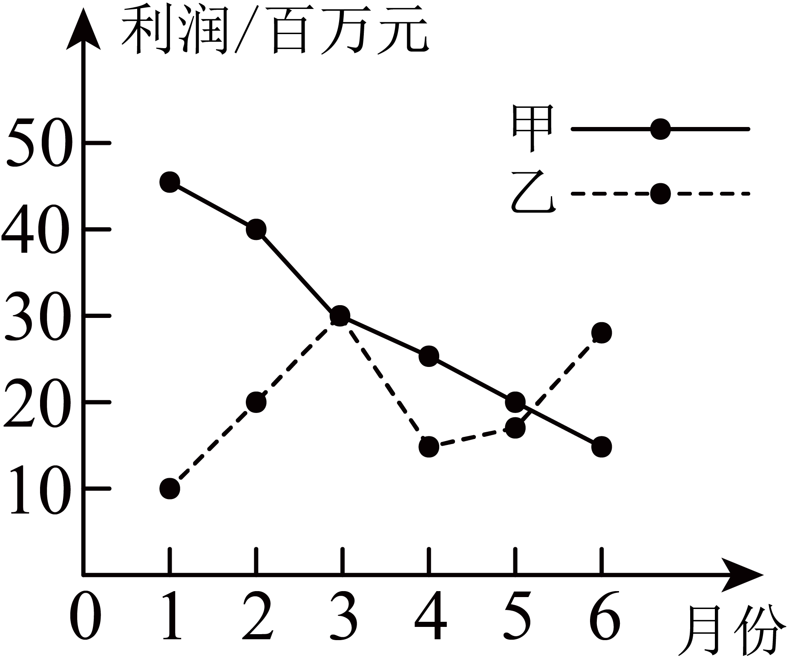
A．1到3月份，乙公司的利润在上涨 B．上半年甲公司的利润一直在下降
C．3月份时两家公司获得的利润一样 D．7月份乙公司的利润一定比甲公司多
9．学校七年级同学在1分钟跳绳测试后，抽取部分同学的成绩（次数为整数），整理画出如图所示的频数分布直方图，下面描述不正确的是（ ）

A．频数最多的是 这一组 B．直方图中的组距是30
这一组 B．直方图中的组距是30
C．本次抽样的样本容量是50 D．优秀率（高于140次）是
10．人口老龄化是全球热点问题，下图是某机构对 年我国老年人数量预测图，根据图中数据，下列说法不正确的是（ ）
年我国老年人数量预测图，根据图中数据，下列说法不正确的是（ ）

A．预计2050年我国60岁及以上老年人数量将超过4.8亿
B．预计 年我国60岁及以上老年人数量增长最多
年我国60岁及以上老年人数量增长最多
C．预计2050年我国80岁及以上老年人数量将超过全国60岁及以上总人数的
D．预计 年我国80岁及以上老年人数量增长最多
年我国80岁及以上老年人数量增长最多
二、填空题（本大题共6小题，每小题3分，共18分）
11．某班学生的体重情况是 ．（填“定量数据”或“定性数据”）
12．2024年5月3日17时27分，嫦娥六号探测器由长征五号遥八运载火箭在中国文昌航天发射场发射，约一小时后，探测器准确进入地月转移轨道，发射任务获得圆满成功．发射前为确保万无一失，工程师对运载火箭的所有零部件进行了检查，应采用的调查方式是 ．（填“普查”或“抽样调查”）
13．【统计图】甲、乙两家汽车销售公司根据近几年的销售量分别制作如图统计图：

从2020年到2024年，这两家公司中销售量增长较快的是 公司．（填“甲”或“乙”）
14．在某市中小学科技创新大赛中，共有200支参赛队伍参与“智能机器人避障”项目角逐．组委会随机抽取了40支队伍进行赛前模拟测试，发现其中有12支队伍能成功完成所有避障任务．据此估计全市200支参赛队伍中，能成功完成所有避障任务的队伍有 支．

15．在对某班的一次数学测验成绩进行统计分析中，各分数段的人数如图所示（分数取正整数，满分 分），请观察图形，并回答下列问题：
分），请观察图形，并回答下列问题：
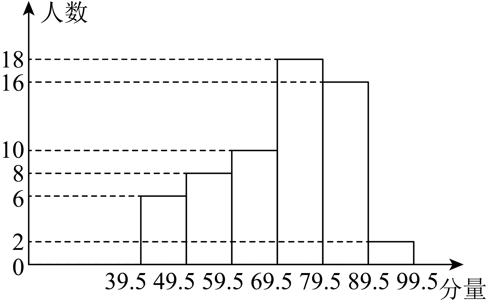
（1）该班有 名学生；
（2） 这一组的频数是 ，频率是 ．
这一组的频数是 ，频率是 ．
三、解答题（第17，18，19，20题，每题6分；第21，22，23题，每题8分；第24，25题，每题12分；共9小题，共72分）
16．下面哪些数据是定量数据，哪些数据是定性数据？
（1）某校七年级 名学生的视力；
名学生的视力；
（2）某班学生每天写作业的时长；
（3）某班同学某一课时的作业完成质量情况．
17．对于下面的调查问题，你觉得用什么调查方式比较合理？
(1)调查在菜市场买的鸡蛋是否有破损；
(2)电视台想知道某电视连续剧的收视率；
(3)调查中国“蛟龙号”深水探测器在深潜之前，工作人员正在做最后一道工序的检查．
18．如图是六（1）班同学最喜欢的体育运动项目的统计图．
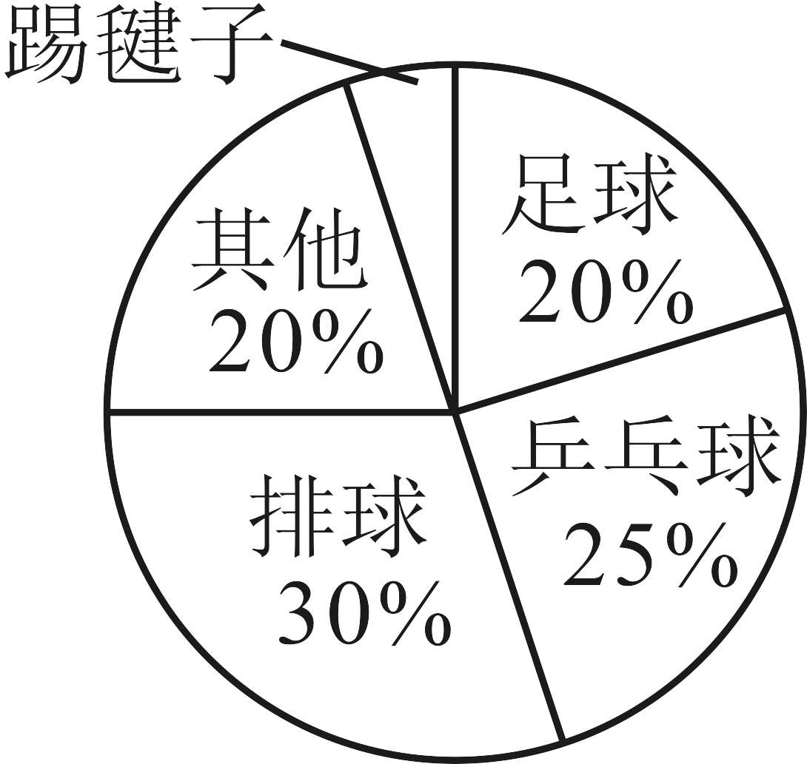
(1)如果有12人喜欢踢足球，那么喜欢打乒乓球的有多少人？
(2)有人认为喜欢踢毽子的人数最少，你同意这种观点吗？为什么？
19．为了考察一所中学的教学水平，将对该校七年级部分学生的本学年考试成绩进行考察．为了全面反映实际情况，采取以下方式进行抽样（已知该校七年级共有20个教学班，并且每个班的学生人数相同）：从全年级20个班中随机抽取1个班，再从该班中随机抽取20人，考察他们的考试成绩．根据上面的叙述，请回答下面的问题：
(1)该所中学的教学水平是 （填“定量数据”或“定性数据”）；
(2)其中总体、个体、样本分别指什么？样本的容量是多少？
(3)试写出上面抽取样本的步骤．
20．足球运动是全球体育界最具响力的单项体育运动，故有世界第一大运动的美称．为了解某校八年级学生对足球运动的喜爱情况做了问卷调查，下面是对某校八年级全体学生的调查结果：
男同学 | 女同学 | |
喜爱的 | 90 | 46 |
不喜爱的 | 20 | 44 |
根据调查结果回答以下问题：
(1)本次调查采取的调查方式是______；（填“普查”或“抽样调查”）
(2)该校八年级全体学生有______名；
(3)男同学喜爱足球的人数占八年级全体学生的百分比是多少？
21．某校举行了“强国有我”的硬笔书法比赛，现随机抽取各年级选手的成绩进行统计，并绘制成如图所示的两幅不完整的统计图（ 表示
表示
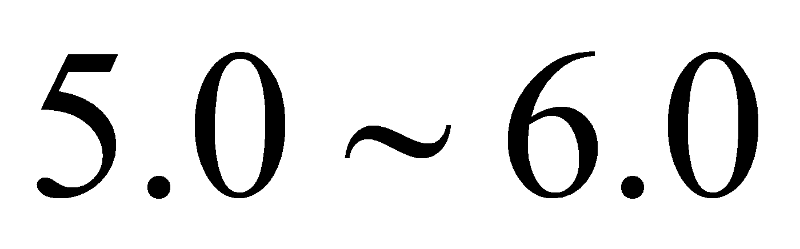
分， 表示
表示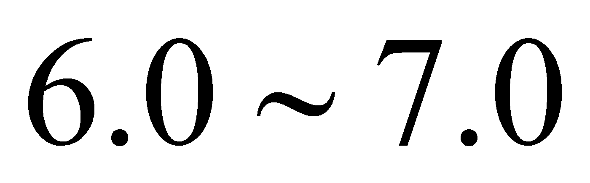
分， 表示
表示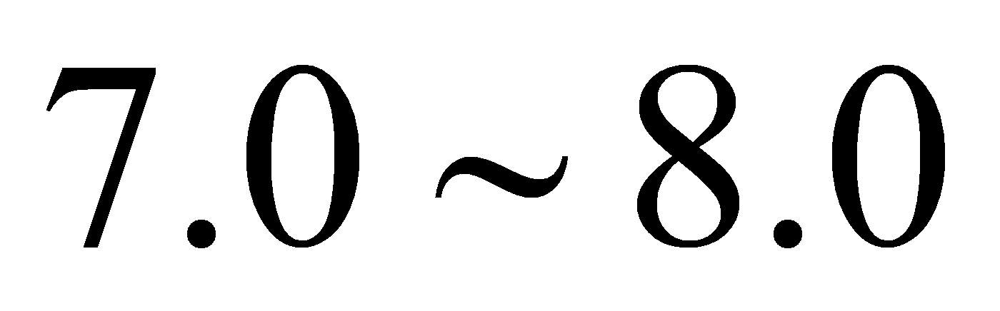
分， 表示
表示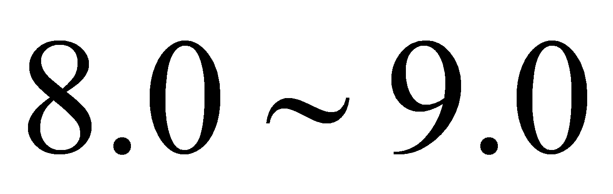
分， 表示
表示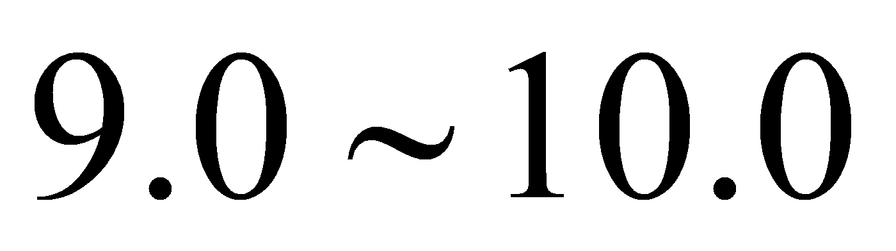
分，每组含前一个边界值，不含后一个边界值），请结合图中提供的信息，解答下列各题：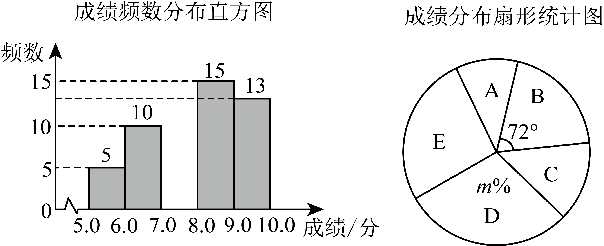
(1)求出 的值；
的值；
(2)把频数分布直方图补充完整；
(3)求扇形的圆心角的度数．
22．某校开展学生社团活动，设计了如下调查问卷：
姓名： 性别： 班级： 年龄： （单选）你想加入的社团为（ ） A．三棋社 B．书法社 C．乒乓球社 D．绘画社 E．不参与 |
为了估计各社团的人数，现在该校随机抽取50名学生做问卷调查，得到如图所示的两个不完全的统计图．
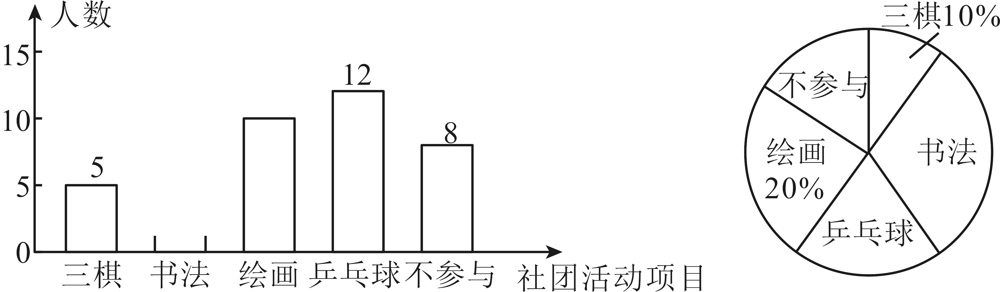
结合以上信息，回答下列问题：
(1)调查问卷中的姓名、性别、班级、年龄四个数据中属于定量数据的是________
(2)请你补全条形统计图（包括具体数据）并计算参与书法社团所在扇形的圆心角度数；
(3)已知该校共有学生1000人，请你估计全校报名参加绘画社团活动的学生人数．
23．每年的6月6日是全国爱眼日．某校关注学生用眼健康，在爱眼日这天随机抽取50名学生进行视力检测，分成
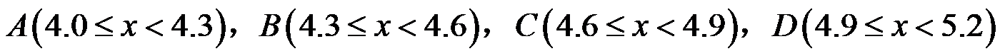
， 五组，将所得数据进行整理，信息如下：
五组，将所得数据进行整理，信息如下：信息一：视力情况频数分布表如下表所示．
组别 | A | B | C | D | E | 合计 |
人数（频数） | 5 | 8 | 16 | a | b | 50 |
信息二：视力情况频数分布直方图如下图所示．请根据图表信息，解答下列问题：
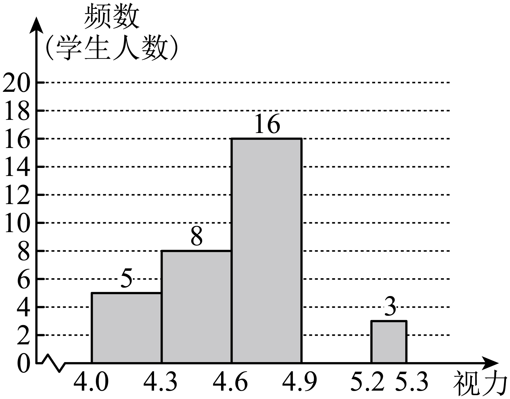
(1) ___________，
___________， ___________，并补全视力情况频数分布直方图．
___________，并补全视力情况频数分布直方图．
(2)抽取的50名学生中视力大于或等于4.9的学生人数是多少？
(3)若全校有1500名学生，请根据样本估计全校视力大于或等于4.9的学生人数．
24．某校举行“汉字听写”比赛，每位学生听写汉字39个，比赛结束后随机抽查部分学生的听写结果，以下是根据抽查结果绘制的统计图的一部分．
组别 | 正确字数 | 人数 |
A | 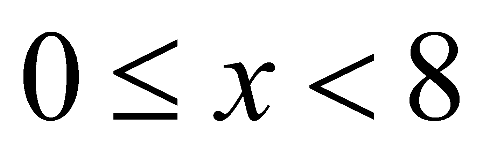 |
|
B |
|
|
C | 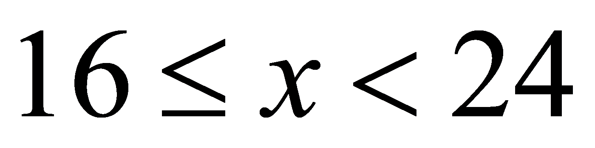 |
|
D | 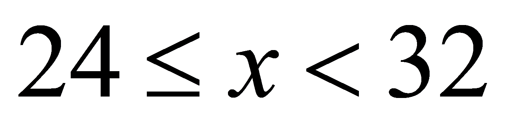 |
|
E | 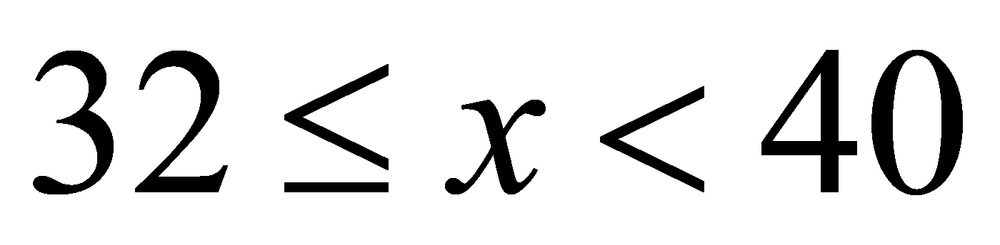 |
|


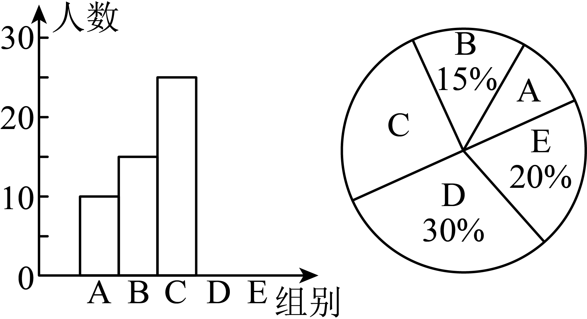
根据以上信息解决下列问题：
(1)在统计表中， ，
， ，并补全条形统计图．
，并补全条形统计图．
(2)扇形统计图中“C 组 ”所对应的圆心角的度数是 ．
(3)若该校共有 900 名学生，如果听写正确的个数少于 24 个定为不合格，请你估计这所学校本次比赛听写不合格的学生人数．
25．随着共享单车的普及，越来越多的居民选择共享单车作为出行的交通工具．为了解某社区居民每周使用共享单车的时间情况．随机对该社区选择共享单车出行的部分居民进行了调研，获得了他们每周使用共享单车时间（单位：小时）的数据，并将收集到的数据进行整理、描述和分析．下面给出了部分信息．
a．该社区居民每周使用共享单车的时间数据的频数分布表如下：
组别 | 使用时间（小时） | 频数（人数） |
第1组 | 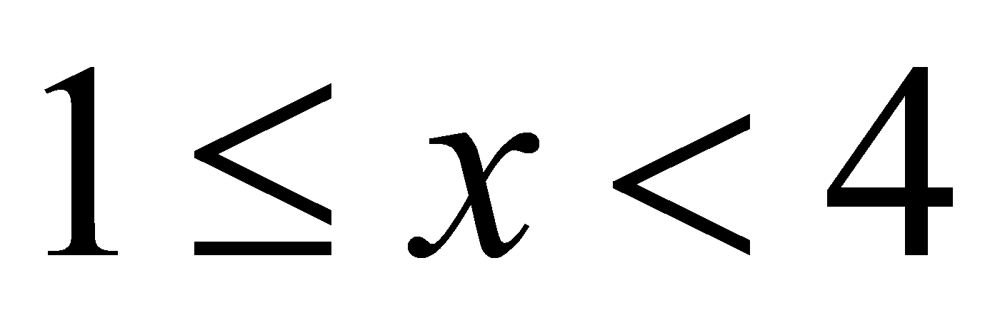 | 5 |
第2组 | 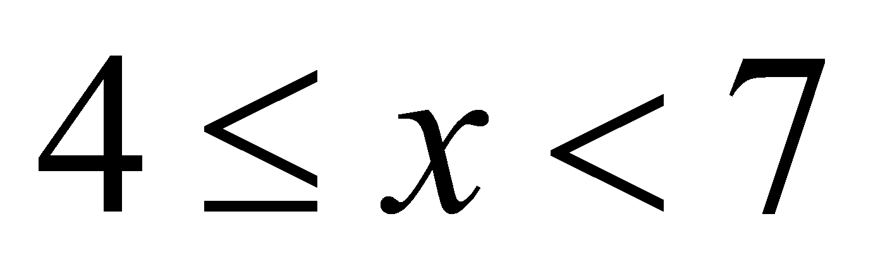 | m |
第3组 |
| 35 |
第4组 | 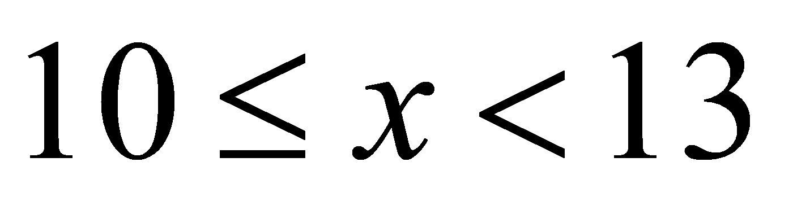 | 20 |
第5组 | 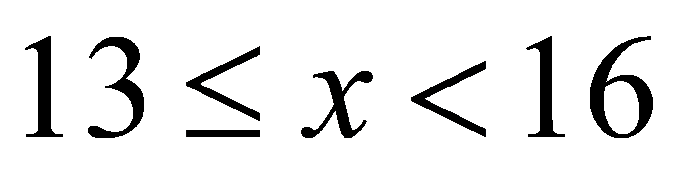 | 15 |

b．该社区居民每周使用共享单车的时间数据的频数分布直方图及扇形图如下：
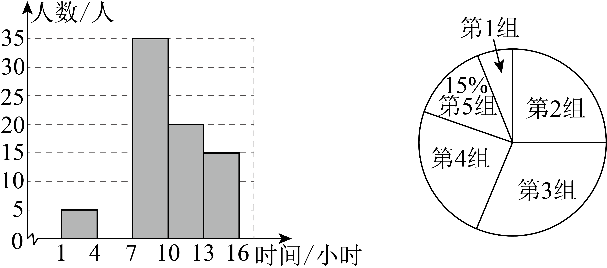
根据以上信息，回答下列问题：
(1)本次调研，随机抽取___________名社区居民进行调查；
(2)第3组居民人数在扇形图中所对应的扇形的圆心角度数是___________ ：
：
(3)请补全频数分布直方图：
(4)若该社区共有500位居民选择使用共享单车出行，请你估计使用共享单车的时间小于10小时的居民约有多少人？